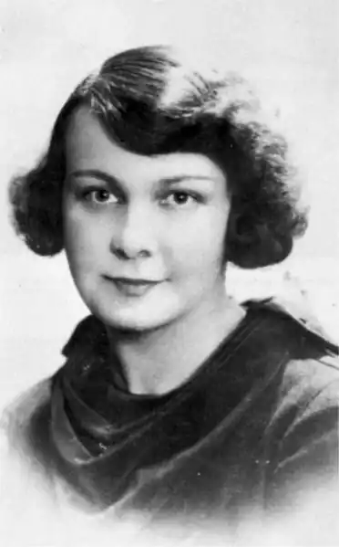
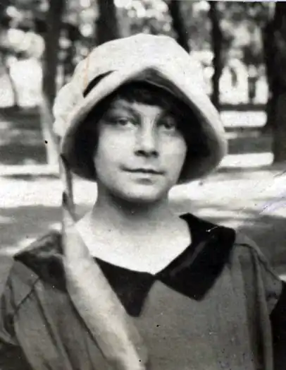
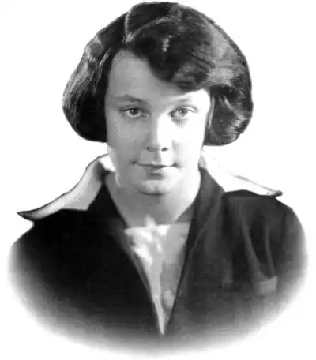
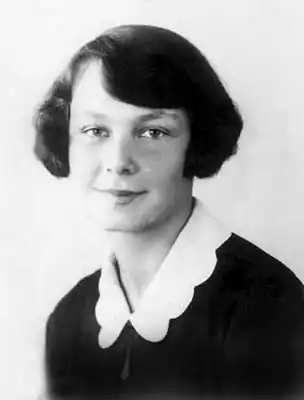
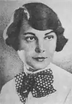
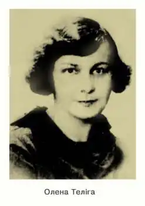
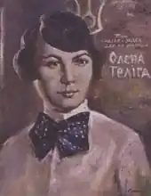

Олена Теліга
(1907 — 1942)
В її елегантно-карбованих віршах, небезпідставно названих критикою "приватними листами світові", вимальовується яскравий образ вольової людини, відданої ідеям національного відродження України, життєлюба, морального максималіста, апологета загальнолюдських цінностей. Власне, у цьому й полягав сенс життя нескореної поетеси-антифашистки, розстріляної німецькими окупантами в Києві у Бабиному Яру 21 лютого (за іншими джерелами — 13 лютого) 1942p. Може, тоді й збулося її кассандрівське передбачення: Я палко мрію до самого рання, Щоб Бог зіслав мені найбільший дар: Гарячу смерть, не зимне умирання. Світогляд О. Теліги формувався поступово. То була справді довга "одіссея", що починалася в Петербурзі. Саме тут, у сім'ї інженера-гідротехніка професора І. Шовгенева і народилася Олена 21 липня 1907p. Потужні хвилі визвольних змагань, що охопили Україну після Лютневої революції 1917p., повернули родину Шовгеневих до Києва, де дочка міністра УНР Олена навчалася у гімназії Дучинської. Під час більшовицького наступу на початку 1919p. Центральна Рада змушена була залишити Київ. Разом з нею виїхав й І. Шовгенів. Згодом оселилися в чеських Подєбрадах, де батько працював ректором Української господарської академії (з 1924p. — alma mater української еміграції). У ті часи відбувся різкий злам у психіці майбутньої поетеси, зумовлений пережитим у Києві та побаченим у Чехії. Усвідомивши себе українкою та непримиренним ворогом великодержавництва, майбутня поетеса вступає на історико-філологічний факультет Українського педагогічного інституту ім. М. Драгоманова у Празі. Вона близько сходиться з Наталею Лівицькою-Холодною, яка вже дебютувала поетичними добірками, Ю. Дараганом, Є. Маланюком, Л. Мосендзом, О. Ольжичем та іншими талановитими письменниками "празької школи". Одружившись із М. Телігою, вона переїздить до Варшави до хворої матері; не пориває своїх зв'язків із українськими "пражанами", яких у 30-ті роки ще називали "вісниківською квадригою". У ліриці поетеси панує вічний бунт, протест проти безбарвної "нудоти життя", її погляд знаходить "у тьмі глибокій Блискавок фанатичні очі, А не місяця мрійний спокій". Власне, йдеться про неоромантизм, що об'єднує "вісниківську квадригу", проявляючись у доробку кожного поета своїми неповторними гранями: коли для Юрія Клена чи Л. Мосендза це був певний нюанс, то для Є. Маланюка, О. Ольжича, а ще більше для О. Теліги — рідна стихія, поривання "кресати вогонь із кремнів", прийняти бій "спокійно і суворо". Героїзм як найвища чеснота, як взірець людської гідності, — то визначальний орієнтир її життя і творчості, тісно пов'язаних із боротьбою за національне визволення рідного народу. Звідси по-чоловічому тверді інтонації програмового вірша "Поворот": Заметемо вогнем любови межі. Перейдемо убрід бурхливі води, Щоб взяти повно все, що нам належить, І злитись знову із своїм народом. Непохитна цілеспрямованість до виборення незалежної України притаманна й іншим її поезіям ("Відповідь", "Племінний день", "Безсмертне", "Засудженим"). Лірика від цього не стає "монохромною", вона переповнена жагою іскристого життя, що "не чіпає лише раба": П'яним сонцем тіло налилося, Тане й гнеться в ньому, як свіча, — І тремтить схвильоване колосся, Прихилившись до мого плеча. О. Теліга розвивала кращі традиції української літератури, передовсім Лесі Українки, що не раз зазначала емігрантська критика. Як поетеса, як прихильник суворих ритмів вона ніколи не втрачала жіночих інтонацій. Так, вірш "Вечірня пісня" — це поезія думки, яка виповнює строфи, відбиваючи гострі суперечності людської душі: лірична героїня прощається зі своїм коханим, якого вона має зібрати в похід, "коли простори проріже перша сурма". Рядок "Я плакать буду пізніш!" поступово розгортається у парадоксальному образі: Тобі ж подарую зброю: Цілунок гострий, як ніж. Щоб мав ти в залізнім свисті Для крику і для мовчань — Уста рішучі, як вистріл, Тверді, як лезо меча. На думку В. Державина, цей вірш свідчив "про безмежні сили, які велика поетка таїла в собі і які вона саможертовно зофірувала, разом з життям, своїй нації". Роль жінки у суспільстві, в житті нації — одна з головних тем лірики О. Теліги. Це не квола істота, не рабиня ("Я руки, що била, не пробачу..."), це дружина й помічник чоловіка-воїна, це новий тип особистості — вольової, цілісної, внутрішньо дисциплінованої натури, невтоленного життєлюба ("Пий же бризки, свіжі та іскристі, Безіменних радісних джерел!"), який свідомо йде назустріч небезпекам в ім'я високих ідеалів: Коли ж зійду на каменистий верх Крізь темні води й полум'яні межі — Нехай життя хитнеться й відпливе, Мов корабель у заграві пожежі. Цей тип досить характерний для емігрантської лірики (Є. Маланюк, Олена Теліга, О. Ольжич), він постав з особливостей національного духу української еміграції, зосібна молоді, яка почала активно готуватися до відновлення історичної справедливості у рідному краї, охопленому хвилями більшовицьких репресій, розчленованому сусідніми країнами. Це прискорило об'єднання розпорошених національних угруповань в ОУН (1929). Обмежуватися лише естетичними питаннями видавалось би за таких обставин неприпустимою розкішшю. Водночас поети-емігранти, прихильники високої духовності, не дозволяли собі перетворювати мистецтво на агітку. Про це, зокрема, писала О. Теліга у статті "Прапори духа", пафос якої спрямовувався проти зловживання плакатністю та "сірим позитивізмом", що не мають нічого спільного з лірикою. Головна мета, що її ставила поетеса у запальних публіцистичних виступах, як і в ліриці, — будити національну свідомість. Найвиразніше ця теза пролунала у статті "Партачі життя". Розкол ОУН, що стався 1940p. внаслідок тактичних та персональних розходжень, тяжко дався взнаки під час світової війни, послабив організовану боротьбу українського народу проти німецьких окупантів. Це відчула на собі й О. Теліга, яка разом з У. Самчуком перейшла нелегально кордон між Польщею та Галичиною (15 липня 1941p. поблизу м. Ярослава). Але Львів зустрів їх неприязно. Невдовзі поетеса разом з групою О. Ольжича переїздить до Рівного, а 22 жовтня — вона вже в омріяному, напівзруйнованому Києві, де мельниківці, незважаючи на небезпеку, заснували Українську національну раду. О. Теліга як член референтури культурної комісії створила "Спілку письменників", переважно з початківців. Водночас вона перебирає редагування додатку "Література і мистецтво" при газеті "Українське слово" і готує його під свіжою, бойовою назвою "Літаври". Тут друкувалися талановиті твори українських поетів та прозаїків як знищених сталінізмом, так і емігрантів. Сіючи зерна національної самосвідомості в окупованому Києві, О. Теліга не опублікувала жодного панегірика гітлерівцям, з презирством ставилася до одописців: "Це, мабуть, ті ж самі писаки, що й Сталінові так щедрували". Певна річ, це не могло не викликати підозри фашистів, які після невдалих спроб приборкання "Літаврів" на початку 1942p. їх закрили. О. Ольжич намагався переконати О. Телігу виїхати з міста, але вона категорично відмовлялася: "Я з Києва вдруге не поїду". Знаючи про масові арешти українців 7 лютого і про те, що гестапо влаштувало засідку в приміщенні Спілки письменників на Трьохсвятительській вулиці, вона 9 лютого пішла на чергове зібрання, де й була заарештована. За свої 35 років поетеса не встигла видати жодної власної книжки, всі вони вийшли посмертно ("Душа на сторожі", 1946; "Прапори духа", 1947; "На чужині", 1947; збірник "Олена Теліга", 1977); більша частина її віршів загубилася. Ю. Ковалів Історія української літератури ХХ ст. — Кн. 2. — К.: Либідь, 1998.